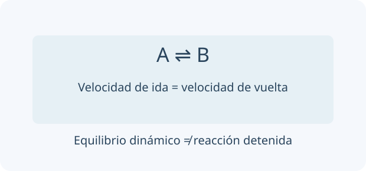

Un sistema fuera del equilibrio tiene una composición actual, que se describe con Q. K corresponde al equilibrio para esa reacción y temperatura. Escribí ambos con el mismo convenio antes de comparar: invertir una reacción invierte las expresiones correspondientes.

A temperatura fija, el equilibrio mantiene composición macroscópica mientras continúan procesos microscópicos. Las cantidades de A y B no tienen por qué ser iguales.
En equilibrio las velocidades directa e inversa son iguales; las concentraciones son constantes pero no necesariamente iguales. Q usa la misma expresión que K en una composición cualquiera. Si Q < K, la reacción avanza hacia productos para alcanzar equilibrio.
Las actividades definen K termodinámica adimensional; en aproximación ideal se usan concentraciones o presiones normalizadas. Sólidos y líquidos puros tienen actividad aproximadamente 1. Cambiar T modifica K; cambiar concentración, presión o añadir catalizador a T fija no cambia K.
Kp = Kc(RT)^Δn en la convención ideal usual · ΔG = RT ln(Q/K)
TU TURNO · INTENTÁ RESOLVER ANTES DE MIRAR
N₂O₄(g) ⇌ 2 NO₂(g), Kc = 0,10 en la convención dada.
Tu desafío: Calculá Q, comparalo con K y predecí la dirección del cambio. Luego analizá qué favorece comprimir.
Ver el ejemplo resuelto paso a paso
Si [NO₂] = 0,10 M y [N₂O₄] = 0,20 M, Qc = 0,010/0,20 = 0,050.
Q < K: aumenta NO₂ hasta equilibrio. Comprimir favorece el lado de menos moles gaseosos.
LECCIÓN 2 / 4 · LEÉ, RESOLVÉ Y COMPROBÁ
Resolver un ácido débil y su titulación
Empezá desde la idea.
Un ácido débil distribuye su cantidad analítica entre formas relacionadas por equilibrio. Durante una valoración cambian las cantidades de ácido, base conjugada y cualquier exceso de titulante. Identificá la región antes de elegir una aproximación: inicial, reguladora, equivalencia o exceso.
Para HA de concentración c sin otros aportes, planteá un balance de materia y Ka. Si x/c es pequeño, [H₃O⁺] ≈ √(Ka c); comprobá la aproximación. Si no vale, resolvé la cuadrática o el balance completo.
En titulación con base fuerte hay regiones distintas: ácido inicial, mezcla reguladora, equivalencia y exceso de base. En semiequivalencia, pH ≈ pKa. En equivalencia queda la base conjugada y el pH no es necesariamente 7; después domina OH⁻ excedente.
Ka = x²/(c − x) · α = x/c
TU TURNO · INTENTÁ RESOLVER ANTES DE MIRAR
Ácido acético c = 0,10 M, Ka = 1,8 × 10⁻⁵.
Tu desafío: Estimá [H₃O⁺], pH y porcentaje de disociación. Verificá la aproximación utilizada.
Ver el ejemplo resuelto paso a paso
x ≈ √(1,8 × 10⁻⁶) = 1,34 × 10⁻³ M.
pH ≈ 2,87 y α ≈ 1,34 %: la aproximación es razonable.
LECCIÓN 3 / 4 · LEÉ, RESOLVÉ Y COMPROBÁ
Precipitación, ion común y anfoterismo
Empezá desde la idea.
Un precipitado aparece cuando formar sólido es favorecido por las concentraciones iónicas actuales. Al mezclar, calculá primero las concentraciones tras diluir. Solubilidad, presencia de un ion común y reacciones ácido-base pueden interactuar; no apliques Kps sin identificar las especies libres.
Un precipitado aparece cuando el producto iónico Qps supera Kps. Para AgCl, Kps = [Ag⁺][Cl⁻]; para CaF₂, Kps = [Ca²⁺][F⁻]². La relación entre solubilidad s y Kps depende de estequiometría y otros equilibrios.
El ion común suele disminuir solubilidad; protonar un anión básico o complejar un catión puede aumentarla. Un hidróxido anfótero como Al(OH)₃ puede disolverse tanto en ácido como en exceso de base por especies distintas. La disolución de óxidos no metálicos puede originar oxoácidos con proporciones definidas por balance.
CaF₂(s) ⇌ Ca²⁺ + 2 F⁻ · Kps = s(2s)² = 4s³ en agua ideal
TU TURNO · INTENTÁ RESOLVER ANTES DE MIRAR
AgCl tiene Kps = 1,8 × 10⁻¹⁰.
Tu desafío: Calculá la solubilidad ideal en agua y comparala con la de una solución 0,10 M en cloruro.
Ver el ejemplo resuelto paso a paso
En agua ideal: s ≈ √Kps = 1,34 × 10⁻⁵ M.
En Cl⁻ 0,10 M, [Ag⁺] ≈ Kps/0,10 = 1,8 × 10⁻⁹ M, si otras reacciones son despreciables.
LECCIÓN 4 / 4 · LEÉ, RESOLVÉ Y COMPROBÁ
Predecir una pila con Nernst
Empezá desde la idea.
Una pila transforma energía química disponible en trabajo eléctrico mediante reacciones separadas. El potencial depende de la reacción escrita y de las actividades de las especies. Nernst conecta la diferencia respecto del estado estándar con Q, sin cambiar qué proceso es oxidación o reducción.
En una pila espontánea, ánodo oxida y cátodo reduce. Usá potenciales tabulados de reducción: E°celda = E°cátodo − E°ánodo, sin multiplicar E° por coeficientes. Nernst corrige por actividades y conecta composición con fuerza electromotriz.
Electrodos de primera clase involucran metal/ion; los de segunda, metal/sal poco soluble/ion común. Un electrodo de referencia ofrece potencial conocido. En Latimer, combiná potenciales mediante ΔG°, no promedios simples si cambian electrones. En dismutación una especie se oxida y reduce; en comproporción dos estados originan uno intermedio.
E = E° − (RT/nF) ln Q · ΔG° = −nFE° · ln K = nFE°/RT
TU TURNO · INTENTÁ RESOLVER ANTES DE MIRAR
Para Zn + Cu²⁺ → Zn²⁺ + Cu, E° ≈ 1,10 V, n = 2.
Tu desafío: Calculá E con Nernst para el cociente dado y comparalo con E°.
Ver el ejemplo resuelto paso a paso
A 25 °C con [Zn²⁺]/[Cu²⁺] = 100, E ≈ 1,10 − (0,05916/2) log 100.
E ≈ 1,041 V. Q usa concentraciones de iones; los metales puros se omiten.
02
PREDECÍ · INVESTIGÁ · EXPLICÁ
La química en tus manos.
Cargando la mesa de trabajo…
03
LISTO PARA PONER A PRUEBA TU COMPRENSIÓN
Repasá y encontrá qué volver a estudiar.
Ocho preguntas por unidad, con explicación y enlace a la lección correspondiente. Estos resultados se guardan únicamente en este navegador; no se envían al panel docente.